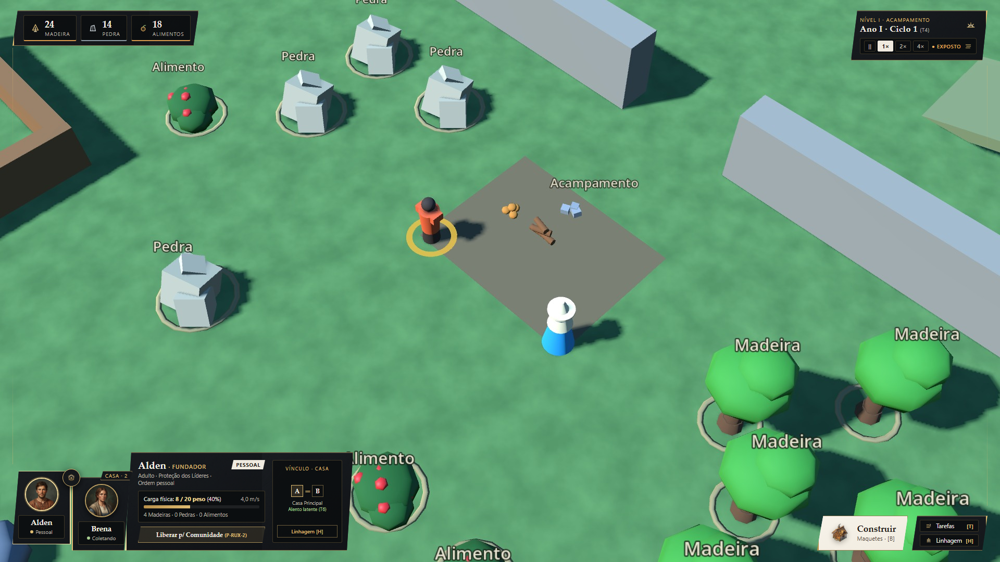
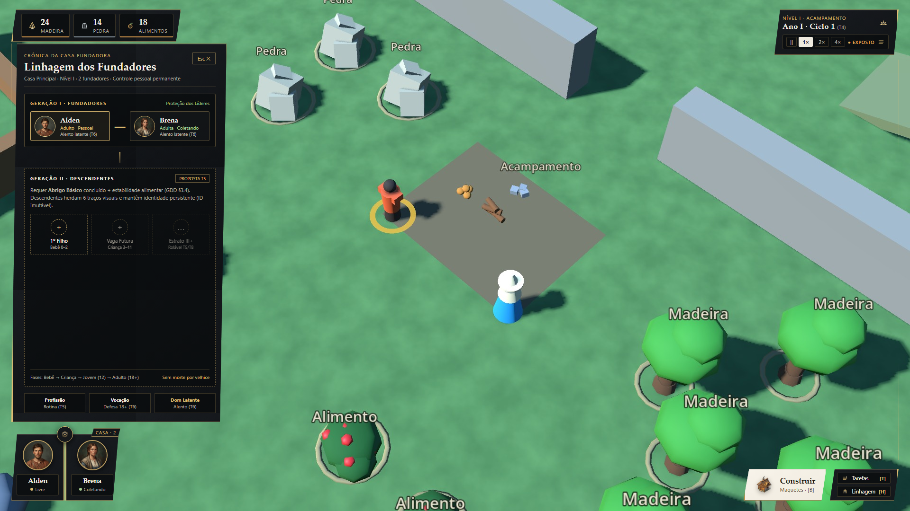
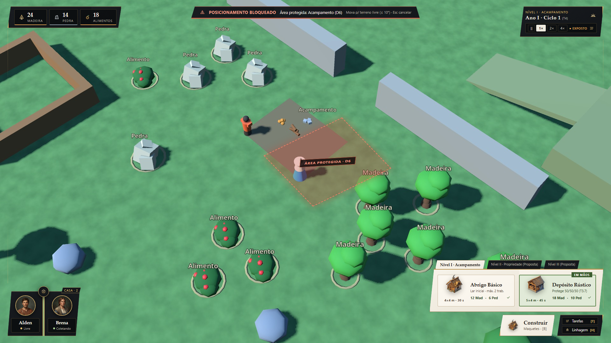
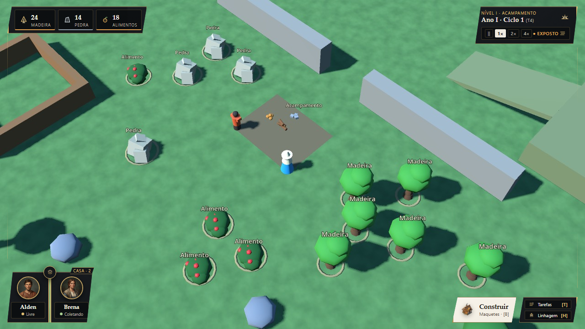
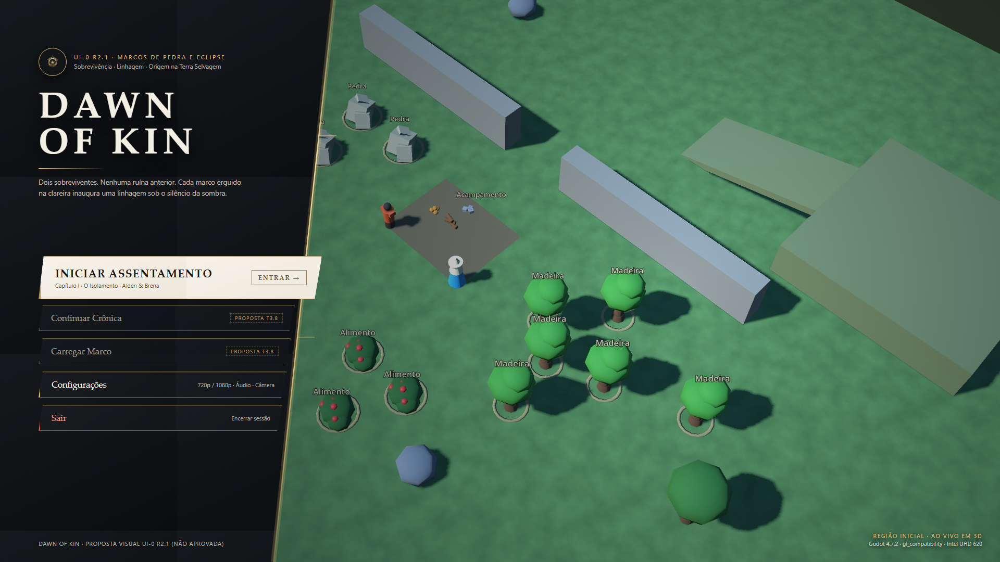

01 · Interface em Repouso
Exploração (>93% 3D Livre)
Quatro âncoras de basalto/alabastro ligadas por prumos sutis e ângulo único de 8°. Nenhuma janela aberta; câmera, Edge Pan e coleta comunitária (RUX-2B) operam sem obstrução.
Tween repouso · MOUSE_FILTER_IGNORE na raiz

02 · Seleção de Fundador
Elevação do Díptico (+12 px)
Ao clicar em Alden no mapa ou no Díptico, sua metade de basalto sobe suavemente em 120 ms e ilumina a Fenda de Aurora central sem deslocar Brena nem bloquear seleção rápida.
Clique esq. seleciona · Caixa destaca ambos

03 · Contexto & Linhagem [H]
Laje Deslizante + Pilar Lateral
A Laje de Inspeção desliza à direita (140 ms) exibindo carga física e modo Pessoal/Comunitário. Tecla [H] abre o Pilar das Gerações acima do Díptico preservando o centro do 3D.
Esc fecha Pilar → Laje → limpa seleção

04 · Entrada em Construção [B]
Mesa de Maquetes em Alabastro
Acionar a chave de alabastro abre a prancha horizontal de edifícios em 150 ms. O contraste escuro → claro sinaliza instantaneamente que o jogador está no modo de planejamento.
MOUSE_FILTER_STOP em toda peça sólida


05 · Escolha & Prévia (Válida × Inválida)
Validação Real de Terreno (D6)
Faixa-chave no topo alterna entre alabastro/musgo (terreno válido ≤ 10°) e basalto/terracota (área protegida do Acampamento ou desnível). Clique esq. assenta; dir./Esc solta.
Sincronizado a PlacementValidator

06 · Retorno à Exploração
Desfazimento Limpo por Esc
Pressionar Esc desfaz sempre um nível por vez sem jamais cancelar tarefas comunitárias já criadas no mapa (regra RUX-0 §4.1). Legibilidade integralmente preservada em 720p.
Zero perda de seleção/tarefa acidental

07 · Pausa & Menu Principal
Mesma Linguagem de Monólito
Ícone ☰ (ou Esc em repouso) abre a laje de pausa com acesso a Configurações e Menu Principal, mantendo a mesma gramática de basalto fendido, Fenda de Aurora e chave de alabastro.
Continuidade visual em 100% das telas
Contrato Técnico de UX
Regras de Movimento & Input
• Duração curta: 120–160 ms (ease-out cúbico); nunca atrasa cliques consecutivos.
• Hierarquia de Esc:
1. Soltar prévia de obra
2. Fechar Mesa de Maquetes
3. Fechar Pilar / Inspetor
4. Limpar seleção RTS
5. Abrir/fechar Pausa
• Anti-Click-Through: todo bloco sólido intercepta mouse (STOP); áreas vazias repassam ao 3D (IGNORE).
Validado no Showcase Godot 4.7.2